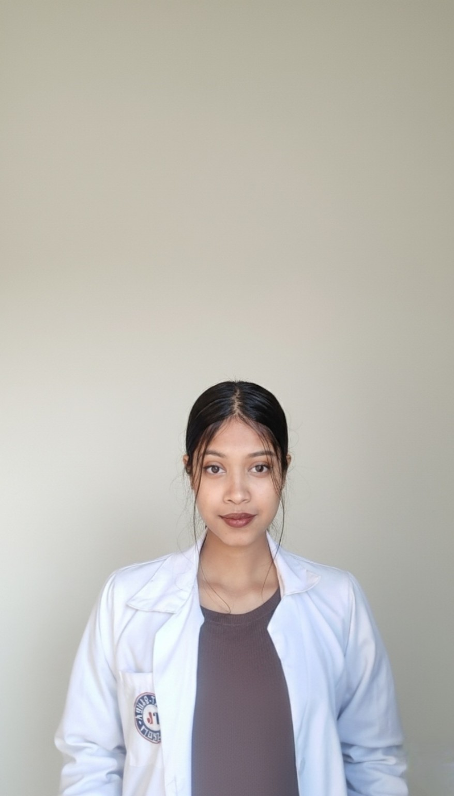

Poullomi
Tarat.
B.Sc. Cancer Biology student and research intern interested in cancer genome instability, molecular cancer biology, cancer immunology and translational research.

Research-minded.
Clinically curious.
I am an undergraduate Cancer Biology student at the Institute of Translational Health Sciences, Rayat Bahra University, with practical exposure to clinical research, cancer biology and molecular laboratory methods.
B.Sc. Cancer Biology
Institute of Translational Health Sciences, Rayat Bahra University
Expected June 2027 · Current CGPA: 8.98/10
Foundation
Class XII — Sai Vikash College, Guwahati · 74.8%
Class X — Don Bosco School, Guwahati · 90.8%
Clinical exposure
meets research.
Clinical Research Coordinator Intern · Department of Otolaryngology
Clinical research exposure in an academic hospital setting, including research coordination and study-related activities.
Clinical Research / Trainee CRC · 2 months
Exposure to Phase III clinical trials in head and neck squamous cell carcinoma, with practical understanding of clinical-trial processes and translational cancer research.
Research Intern Trainee
Worked on AI/ML-oriented biomedical research tasks including data preprocessing, algorithm testing and interpretation of biological data patterns; gained exposure to computational and bioinformatics approaches.
Questions I want
to investigate.
Chromosomal Instability–Driven Immunotherapy
Literature-based research proposal exploring genomic instability and immune-targeted approaches in cancer.
cGAS–STING in Cancer
Investigation of DNA-sensing pathways and their relevance to anti-tumour immunity.
HPV / Cervical Cancer
Academic work on HPV-associated cervical carcinogenesis and cervical intraepithelial neoplasia (CIN).
Genome Stability → Tumour Biology
Chromosomal instability, chromothripsis, cancer immunology, cGAS–STING and virus-associated cancers.
Research toolkit.
Academic milestones.
Pragyan Bharati Award
Assam Higher Secondary Education Council · 2022
Anundoram Borooah Award
Secondary Board of Education Assam · 2020
NSS National Adventure Camp
ABVIMAS · 2024
Achiever’s Award at RBU Summit 2026
9+ CGPA — University Examination
Let's connect.
poullomii@gmail.com
For research opportunities, internships and academic collaborations.
+91 60010 17110
Available for professional communication.
Poullomi Tarat ↗
Connect with me professionally.
Open my CV ↗
Research-focused CV with education, experience, skills and academic work.